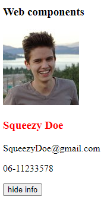

What are web components?
Web components is a set of web platform API's that allow for reusable and encapsulated HTMl tags which can be used in web- pages or apps. This allows for a modular design we know from frameworks as React.js or Vue.js, but web components do not require any 3rd party library or framework.
The three pillars of web components
Web components uses three major technologies that build the foundation to create versatile custom elements with encapsulated functionality. Custom elements can be reused on a single web page multiple times without causing code collisons.
Custom elements
Web components allows you to create custom HTML elements, that serves as a template for your content. You are in full control to decide how these elements look and behave. Custom HTML elements have a custom tag name, added markup, styling and scripts. All of this does not collide with other elements because of its encapsulated nature. Here is an example of a custom HTML element:
<user-card name="Squeezy Doe"></user-card>
Here I have made a new custom HTMl element. but in order for it to render anything, we first need to register it using JS. Otherwise, the element will just be parsed as a simple <span> element. Let's register our custom element.
class UserCard extends HTMLElement {
constructor() {
// extends the parent: HTML element
super()
// set text from attribute: name
this.innerHTML = `${this.getAttribute('name')}`
}
}
// define custom element
window.customElements.define('user-card', UserCard)
I've defined an attribute name as Squeezy Doe in the custom Element. The constructor is automatically called when the element is rendered. With super() I first inherit all the properties from the HTMLElement parent class. After that I set the text from the name attribute into the element.
Differences in custom HTML elements
There are two differnt types of elements you can create.
- Autonomous custom elements- are standalone elements that do not inherit any properties from basic HTML element, but inherit from the HTMLElement class itself. Our code example is a example of a autonomous custom element.
- Customized built-in elements- do inherit from basic elements like <ul>. These can be used to extend basic HTML functionality, like making a list element expandable.
Shadow DOM
An important aspect of web components is encapsulation — being able to keep the markup structure, style, and behavior hidden and separate from other code on the page so that different parts do not clash, and the code can be kept nice and clean. The Shadow DOM API is a key part of this, providing a way to attach a hidden separated DOM to an element. This article covers the basics of using the Shadow DOM - MDN
As MDN stated, the shadow DOM is seperated from the normal DOM structure and can be attached to a custom element.
This way the features of an element are private and allows us to write code that will not clash with the normal
DOM structure or any other instance of other custom elements.
 Source: https://mdn.mozillademos.org/files/15788/shadow-DOM.png
Source: https://mdn.mozillademos.org/files/15788/shadow-DOM.png
The shadow DOM allows to attach hidden DOM trees to custom HTML elements. Just like in the normal DOM structure, it starts as a root. called the shadow root, and other nodes can be a child af that root. The shadow DOM has some added terminology to keep track of.
- Shadow host - The regular DOM node that the shadow DOM is attached to
- Shadow tree - The DOM tree inside the shadow DOM
- Shadow boundary - This is where the regular DOM ends and the shadow DOM begins
- Shadow root - The root node of the shadow DOM tree
The nodes in the shadow DOM work in exactly the same way as in the regular DOM tree. You can add/remove children- or parent nodes or add styling to a node or the entire DOM tree. It's up to you how what you want to do with it. The big difference between a shadow DOM and a regular DOM is that nothing that is defined in a shadow DOM can effect the outside.
Modifying our custom element
Now we know the basic of the shadow DOM let's create an example by modifying our custom HTML element.
Notice the possibilities of web components. You don't have to use all 3 technologies. If you just want to use custom HTML elements, that's perfectly reasonable.
The first thing we need to do is to attach a shadow DOM to our custom element.
this.attachShadow({ mode: 'open' })
The attachShadow method comes with two options. It can either be set to open or closed. Ik you choose mode: closed you won't be able to access the shadow DOM from the outside. Built-in elements that also have a shadow DOM like <video> elements always are closed.
Now lets add a new attribute to our custom element so it also contains an avatar url.
<h3>Web components</h3>
<user-card name="Squeezy Doe" avatar="https://ranDOMuser.me/api/portraits/men/42.jpg"></user-card>
The custom element now has a attribute that has a link to an API that can give ranDOM user information. In this case a
profile picture. I've also added a header element. This will be used to demonstrate encapsulation.
The last part is to add HTMl to our custom element that hasw place for the name and the avatar.
this.shadowRoot.innerHTML = `
<style>
h3 {
color: red
}
</style>
<div class="user-card">
<img>
<div>
<h3></h3>
</div>
</div>
`
Our user card now has an image and a header element. I've added some styling that makes the header red.
Lets add the data from the attributes to the image and header elements.
// set text from attribute: name
this.shadowRoot.querySelector('h3').innerText = this.getAttribute('name')
// set img from attribute: avatar
this.shadowRoot.querySelector('img').src = this.getAttribute('avatar')
Our card is now rendered on the homepage. It has the avatar and name we privided as attributes in the custom element. Notice how the header from the custom element is red, as specified in the shadow DOM, but it is not applied on the header outside the custom element.
HTML templates
Looking at our previous example the HTML looks like something we want to reuse at a later time. This is where HTML templates come in the picture. HTML templates are little reusable snippets of code that is present inside the normal HTML flow but won't be immediately rendered. This is perfect if we want to use it at a later time.
Lets first create a new template element and store out HTML in there.
const template = document.createElement('template')
template.innerHTML = `
<style>
h3 {
color: red
}
</style>
<div class="user-card">
<img>
<div>
<h3></h3>
<div class="info">
<p>Email</p>
<p>Phone</p>
</div>
<button>hide info</button>
</div>
</div>
I've added Phone and Email here too so I can use slots later. We can now append out template to the shadow DOM.
this.shadowRoot.appendChild(template.content.cloneNode(true))
We use cloneNode() to create a new instance and set it to true to also clone the child elements.
Slots
Right now our web component is a bit static. It can inly show a single value at a time. We can add some flexibilty by adding slots to our component. Slots can be identified using a name attribute. It's very similar to how we defined our avatar or name. Slots allow you to use placeholders that can be filled with any markup fragment later when the element is used in the markup.
So to fill the phone or email parts of our card we can add slots. First lets add the slots to our component.
<user-card name="Squeezy Doe" avatar="https://ranDOMuser.me/api/portraits/men/42.jpg">
<div slot="email">SqueezyDoe@gmail.com</div>
<div slot="phone">06-11233578</div>
</user-card>
Now the only thing we need to do is to use the slots in our template. Lets change our phone and email part from the template to slots as well.
<div class="info">
<p><slot name="email"></p>
<p><slot name="phone"></p>
<button>hide info</button>
</div>
By adding a name attribute to the slot in our template we can identify them as the email or phone slot. That's all we not to do
to add some flexibilty to our component.

Adding an event
You might have noticed the Hide info button in our template. We can use this button to add an event to the component that hides the info on a button click. We need an event listerner for that. I'll put the event listener in a lifecycle method connectedCallback(). connectedCallback() is called every time the element is inserted into the DOM.
connectedCallback() {
this.shadowRoot.querySelector('#toggle-info').
addEventListener('click', () => {
this.toggleInfo()
})
}
In the connectedCallback() method we add an event listener on the button element. Every time it is clicked the toggleInfo method
is called.
The toggleInfo method is defined within our class. It's a simple function that shows or hides the info from the card.
toggleInfo() {
this.showInfo = !this.showInfo
const info = this.shadowRoot.querySelector('.info')
const toggle_btn = this.shadowRoot.querySelector('#toggle-info')
if (this.showInfo) {
info.style.display = 'block'
toggle_btn.innerText = 'Hide info'
} else {
info.style.display = 'none'
toggle_btn.innerText = 'Show info'
}
}
Now the only thing left is to remove the event listener when the element is removed from the DOM.
disconnectedCallback() {
this.shadowRoot.querySelector('#toggel-info').
removeEventListener()
}
Wrapping up
We have made a basic example using the three pillars of web components. We can use these cards anywhere without conflicting with other code. Lets add some extra styling and multiply these cards to finish our example. Here's the end result!
Full code
HTML
<h3>Web components</h3>
<user-card name="John Doe" avatar="https://ranDOMuser.me/api/portraits/men/52.jpg">
<div slot="email">John@gmail.com</div>
<div slot="phone">06-11233578</div>
</user-card>
<user-card name="Jane Doe" avatar="https://ranDOMuser.me/api/portraits/women/12.jpg">
<div slot="email">Jane@gmail.com</div>
<div slot="phone">06-11233578</div>
</user-card>
<user-card name="Squeezy Doe" avatar="https://ranDOMuser.me/api/portraits/men/42.jpg">
<div slot="email">SqueezyDoe@gmail.com</div>
<div slot="phone">06-11233578</div>
</user-card>
<user-card name="SqueezyDough" avatar="./images/SD.jpg">
<div slot="email">SqueezyDough@outlook.com</div>
<div slot="phone">06-11233578</div>
</user-card>
JS
const template = document.createElement('template')
template.innerHTML = `
<style>
.user-card {
display: grid;
grid-template-columns: 1fr 2fr;
grid-gap: 1rem;
width: 400px;
margin-bottom: 1rem;
padding-bottom: .5rem;
background-color: #eee;
border-top: 3px solid red;
border-radius: 5px;
font-family: Arial, sans-serif;
}
.user-card img {
width: 100%;
}
h3 {
color: red
}
</style>
<div class="user-card">
<img>
<div>
<h3></h3>
<div class="info">
<p><slot name="email"></p>
<p><slot name="phone"></p>
</div>
<button id="toggle-info">Hide info</button>
</div>
</div>
`
class UserCard extends HTMLElement {
constructor() {
// extends the parent: HTML element
super()
this.showInfo = true
this.attachShadow({ mode: 'open' })
this.shadowRoot.appendChild(template.content.cloneNode(true))
// set text from attribute: name
this.shadowRoot.querySelector('h3').innerText = this.getAttribute('name')
// set img from attribute: avatar
this.shadowRoot.querySelector('img').src = this.getAttribute('avatar')
}
toggleInfo() {
this.showInfo = !this.showInfo
const info = this.shadowRoot.querySelector('.info')
const toggle_btn = this.shadowRoot.querySelector('#toggle-info')
if (this.showInfo) {
info.style.display = 'block'
toggle_btn.innerText = 'Hide info'
} else {
info.style.display = 'none'
toggle_btn.innerText = 'Show info'
}
}
connectedCallback() {
this.shadowRoot.querySelector('#toggle-info').
addEventListener('click', () => {
this.toggleInfo()
})
}
disconnectedCallback() {
this.shadowRoot.querySelector('#toggel-info').
removeEventListener()
}
}
// define custom element
window.customElements.define('user-card', UserCard)